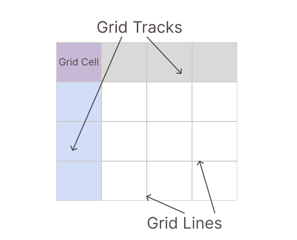
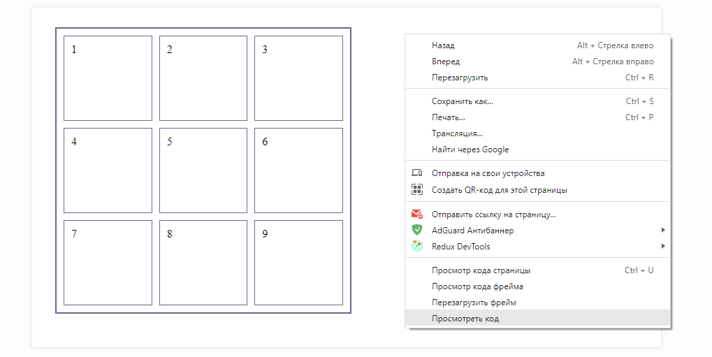
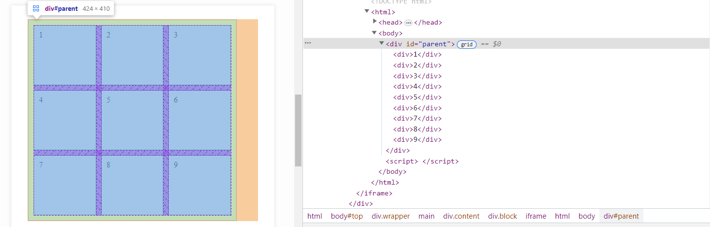
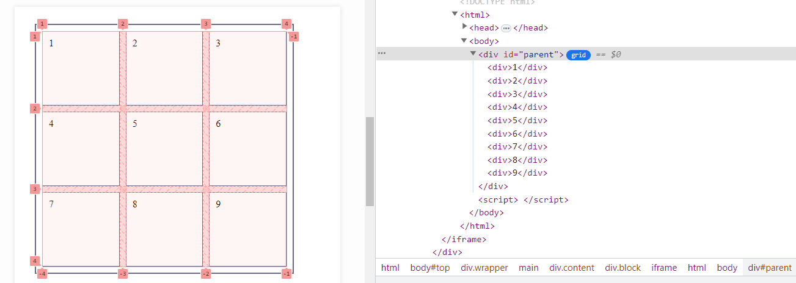
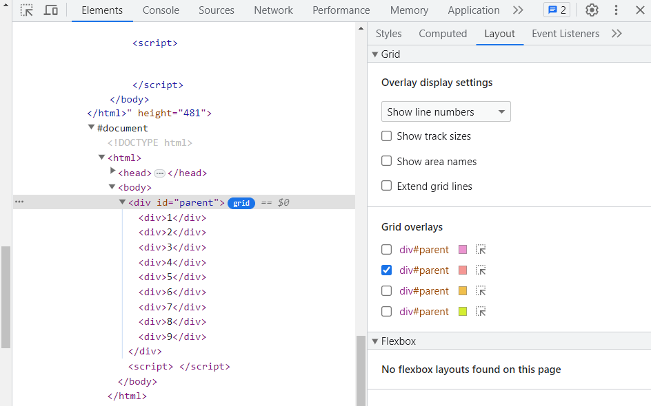
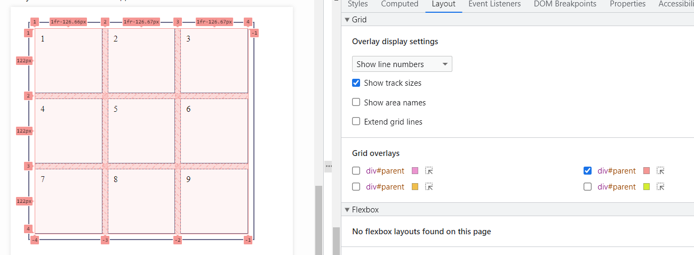
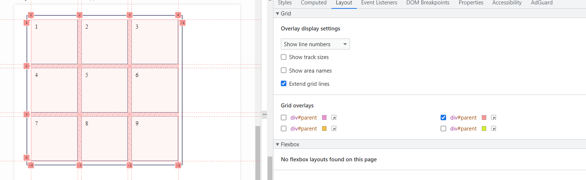

CSS гриды представляют собой способ разместить элементы одновременно и по горизонтали, и по вертикали. Это более продвинутый способ по сравнению с флексами, но более сложный для освоения.
Чтобы сделать грид, нужно задать элементу свойство display в значении grid:
После этого элемент превратится в двумерную сетку, в которой элементы располагаются по вертикали (столбцы) и горизонтали (ряды). Область при пересечении столбца и ряда называется ячейкой.
В следующих уроках мы сначала изучим размещение элементов по столбцам, затем перейдем к изучению рядов, а после объединим все это вместе.
По своей сути сетка грида состоит из треков и линий. Под треком (grid tracks) понимают столбец (вертикальная строка) или ряд (горизонтальная строка) грида. Ячейка (grid cell) - это область пересечения столбца и ряда. Линии (grid lines) размещаются между треками в гриде. Смотрите на рисунок ниже:

При работе с гридами в процессе верстки сайта бывает нужно проверить насколько правильно происходит расстановка элементов в сетке. Кроме того, если у нас допущена ошибка мы должны разобраться с какого элемента идет неправильное размещение. Для этой цели мы можем использовать отладчик в браузере.
Давайте рассмотрим грид на примере отладчика в браузере Chrome. Вначале выбираем интересующий нас объект с грид и кликнув правой кнопкой мыши выбираем из списка опцию 'Просмотреть код':

Теперь в открывшейся справа панели браузера наводим курсор на наш объект с гридом и замечаем, что в строке рядом с родительским элементом находится кнопка grid:

После того как нажали на кнопку grid увидим, что наш объект отображается в визуально понятной системе грид, с указанием нумерации всех столбцов и рядов:

Теперь обратите внимание на панель в отладчике. В ней размещены вкладки Styles, Computed, Layout и прочее. Переключитесь с вкладки Styles, которая активна по умолчанию, на вкладку Layout. Вы увидите список настроек вашего грида:

Давайте выберем для отображения первую опцию Show track sizes, которая показывает размер треков:

C помощью опции Show area names можно отобразить имена областей грида, если они заданы. А выбрав опцию Extend grid lines мы увидим продленные за рамки грида линии треков:

Знакомство с работой в гриде мы начнем с того, что назначим количество и ширину столбцов, по которым будут размещаться дочерние элементы. Для этой цели мы используем свойство grid-template-columns, которое указывается в элементе-родителе и задает количество и ширину столбцов, которые будут занимать элементы-потомки в гриде. В значении свойства указываем ширину столбцов в пикселях.
Давайте вначале создадим родительский элемент и делаем его грид-контейнером. Пусть у нас есть div, в котором располагается четыре дочерних элемента. Зададим для него в свойстве display значение grid, а в свойстве grid-template-columns пропишем ширину для двух столбцов:
Теперь давайте создадим таблицу с четырьмя разными по размеру столбцами:
Размеры рядов и столбцов в гриде можно задавать не только в px, но и в единицах гибкости fr (фракция). Использование этих единиц означает, что все пространство для размещения элементов будет разбито на одинаковые доли или фракции. Каждый элемент сможет взять определенную часть этого разбиения. Давайте посмотрим, как это делается.
Давайте с помощью свойства grid-template-columns сделаем так, чтобы первый и второй столбцы грида заняли одну часть контейнера, а третий столбец - три части:
Значения, указанные в единицах fr, могут принимать дробный вид. Давайте изменим предыдущий пример, указав для второго и третьего столбца ширину в дробных числах:
Задавать ширину столбцам можно одновременно в пикселях и fr:
Также наряду с fr можно использовать значения в %, которые также определяют какую часть контейнера будет занимать столбец. При этом сначала будет высчитываться размер столбца в %, а оставшееся свободное пространство разобьется на фракции:
Если у вас несколько столбцов, для которых задаются одинаковые размеры, то можно упростить запись, использовав функцию repeat. В первом параметре этой функции указывается количество столбцов, а во втором - их ширина. Давайте посмотрим на примерах, как это работает.
Пусть у нас есть три колонки одинакового размера.
Упростим запись с помощью repeat:
Пусть у нас есть три колонки одинакового размера, а четвертая другого размера.
Упростим запись с помощью repeat:
Пусть у нас есть первые три колонки одного размера, а вторые три колонки другого размера.
Упростим запись с помощью repeat:
Пусть у нас есть первые три колонки одного размера, потом еще колонка, а потом еще три колонки другого размера.
Упростим запись с помощью repeat:
Пусть у нас есть первые три колонки одного размера, потом еще колонка, а потом еще три колонки другого размера.
Упростим запись с помощью repeat:
В гриде при указании размеров рядов и столбцов можно использовать значение auto. В этом случае, блоки просто заполнят все доступное им свободное пространство за вычетом той ширины, которая указана в пикселях. Давайте посмотрим на примерах.
Давайте укажем первому и третьему столбцам фиксированную ширину в пикселях, а второй столбец пусть автоматически займет оставшееся место:
Для установления размера одинаковых столбцов грид-контейнера очень удобно в функции repeat указывать значение auto-fill, благодаря которому наш контейнер заполнится одинаковыми столбцами нужной нам ширины.
Давайте сделаем таблицу из восьми элементов и зададим каждому столбцу одинаковую ширину в 200px. При этом, пусть значение auto-fill само высчитает нужное количество столбцов:
Очень удобно вместе с auto-fill указывать функцию minmax, которая задает диапазон ширины столбцов от минимального до максимального значения. Если ширина контейнера не вмещает все столбцы, то их некоторые из них переместятся на новую строку, при этом столбцы в строке равномерно распределятся в ней.
Давайте посмотрим на примере. Для того, чтобы увидеть разные варианты размещения столбцов изменяйте ширину страницы:
Теперь давайте рассмотрим значение auto-fit, которое также применяется при указании столбцов одинакового размера совместно с функцией repeat. Его отличие от значения auto-fill заключается в том, что auto-fit подгоняет количество столбцов под доступную ширину контейнера, расширяя или сжимая их.
Давайте рассмотрим работу значения auto-fit на примере контейнера с восьмью элементами. Применим вместе со значением auto-fit известную вам по предыдущему уроку функцию minmax:
А теперь уменьшим ширину грид-контейнера до 400px:
Элементы грида можно также разместить по рядам. Для этого предназначено свойство grid-template-rows. Это свойство через пробел принимает размеры рядов. В нем можно применять те же значения, которые мы изучали и для столбцов.
Для примера давайте разместим блоки в четыре ряда:
Укажем для первого и третьего рядов фиксированную ширину в пикселях, а второй ряд пусть займет оставшееся место:
Используем функцию repeat для указания размеров рядов:
Назначим рядам высоту 50px, а количество рядов зададим автоматически с помощью значения auto-fill:
Бывают ситуации, когда удобно указать размеры рядов и столбцов в краткой форме. Для этого мы используем свойство grid-template, которое указывается в элементе-родителе и представляет собой сокращенную форму записи двух свойств grid-template-rows и grid-template-columns.
Ряды и столбцы для грид-контейнера указываются через слеш, их размеры определяются в единицах измерения.
Давайте с помощью свойства grid-template сделаем таблицу:
А теперь давайте зададим второму и третьему рядам одинаковую ширину, а каждому столбцу - различную ширину:
А теперь в таблице из предыдущего примера сделаем верхний ряд шириной в две фракции, а первый столбец - в половину фракции:
Ряды и колонки в гридах формируют сетку. Можно сделать так, чтобы элемент занимал не одну ячейку сетки, а несколько.
Для того, чтобы элемент занял более одного ряда, ему следует задать свойство grid-row. В этом свойстве через слеш задаются числа, указывающее начальную и конечную позицию элементов в гриде.
При этом элемент растянется от первой позиции до второй позиции (не включая ее). To есть значение 1 / 2 заставит элемент занять одну первую ячейку, а значение 1 / 3 заставит элемент занять первую и вторую ячейку (но не включая третью).
Пусть у нас есть грид с тремя дочерними элементами. Давайте разместим их так, чтобы первый элемент занимал два ряда:
Теперь давайте назначим четвертому блоку три ряда:
Аналогичным образом можно объединять столбцы с помощью свойства grid-column.
Пусть у нас есть грид с четырьмя элементами. Теперь сделаем так, чтобы первый, второй и третий элементы располагались в первом ряду. А четвертый элемент занимал весь второй ряд:
Давайте рассмотрим различные типы объединений по рядам и столбцам.
Давайте сделаем таблицу, скомбинировав свойства grid-column и grid-row:
А теперь давайте сделаем так, чтобы первый и четвертый блоки занимали весь ряд, а второй блоки - два ряда и два столбца, а третий и четвертый блоки - один ряд и два столбца:
Давайте сделаем так, чтобы первый элемент в таблице занял все столбцы на первом ряду, а остальные элементы расположились на втором ряду, заняв одинаковые по ширине столбцы:
Давайте изменим предыдущий пример так, чтобы второй элемент занял столбец, в три раза больший по ширине, чем столбцы третьего и четвертого элементов:
Теперь разместим на первом ряду два элемента, задав для каждого разную ширину столбцов:
Пусть теперь у нас будет таблица, состоящая из пяти элементов. Давайте расположим первый элемент на верхнем ряду, а все остальные - на втором ряду:
В ситуации, когда несколько элементов занимают один и тот же столбец может наблюдаться их перекрытие, при котором каждый последующий элемент сдвигается на ряд ниже.
Давайте в нашем гриде сделаем сделаем так, чтобы первый элемент расположился в первом ряду, второй - во втором, а третий и четвертый - на третьем ряду:
Можно задать расстояние между столбцами сетки. Это делается с помощью свойства column-gap, которое задается в элементе-родителе.
Давайте зададим расстояние в пикселях между столбцами в гриде:
Можно также задать расстояние между рядами сетки. Это делается с помощью свойства row-gap, которое задается в элементе-родителе.
Давайте зададим расстояние между рядами в гриде:
С помощью свойства gap можно одновременно задать расстояние между столбцами и рядами грида.
Можно передать либо одно значение, либо два через пробел. Если передано одно значение, оно задает одновременно расстояние между столбцами и рядами. Если же передано два значения, то первое задает расстояние между рядами, а второе - между столбцами.
Зададим одинаковое расстояние между столбцами и рядами:
Зададим разные расстояния между столбцами и рядами:
Давайте перейдем к практической работе с системой грид и создадим плиточки с разными отступами.
Давайте создадим таблицу из девяти элементов и разместим их по трем столбцам:
Теперь применим свойство grid-gap для создания отступа между элементами:
А теперь давайте зададим расстояние только между блоками в гриде:
Давайте сделаем плиточку, в которой в нижнем ряду будет не хватать одного блока: